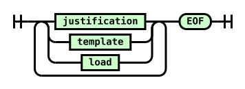
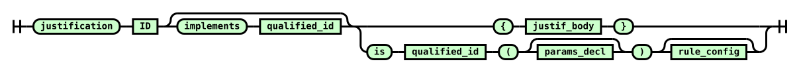
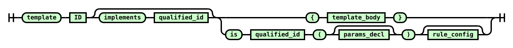
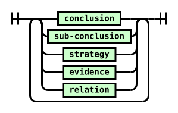
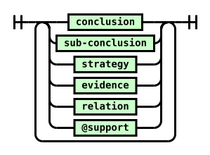
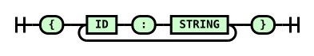

Language Reference
A .jd file describes one or more justification models. It is parsed by the
ANTLR4 grammar in
jpipe-lang/src/main/antlr4/ca/mcscert/jpipe/lang/JPipe.g4.
Railroad diagrams in this page are generated directly from that grammar. Rounded boxes are terminals (keywords / punctuation); rectangular boxes are non-terminals (links to other rules).
File structure
A .jd file contains one or more top-level declarations — justification,
template, or load — followed by the end of file.

Declarations
justification
Declares a concrete justification model. Two forms are available: a direct body that lists elements inline, and an operator call that composes the model from existing ones.

The optional implements clause specialises a previously declared template
(see Template specialisation).
Example — direct body:
justification Review {
conclusion c is "The software is safe"
strategy s is "Testing argument"
evidence e is "Test suite passes"
s supports c
e supports s
}
Example — operator call:
justification Combined is assemble(Review, Audit) {
conclusionLabel: "The system is ready"
strategyLabel: "Combined argument"
}
template
Declares an abstract reusable structure. A template may contain @support
(abstract support placeholder) elements in addition to all element types
allowed in a justification body.

Example:
template TestTemplate {
conclusion c is "A claim"
strategy s is "An argument"
@support abs is "TBD"
s supports c
abs supports s
}
load
Imports all models declared in another .jd file. The path is relative to the
current file. The optional as clause binds the imported models under a
namespace alias, preventing name collisions.
Example:
load "common/base.jd" as base
All models in base.jd are accessible as base:<ModelName>.
Without as, the models are imported into the top-level namespace directly.
Body elements
Both justification and template bodies contain one or more elements and
support edges.
Justification body

Template body
Identical to a justification body, but may additionally contain @support
abstract support placeholders.

Element declarations
All element declarations share the form:
<keyword> <id> is "<label>"
where <id> is a qualified id and <label> is a quoted
string.
conclusion
The top-level claim of the model. Each model must have exactly one.
sub-conclusion
An intermediate claim that can act as a direct supporter of a strategy.
strategy
An argument linking evidence or sub-conclusions to a conclusion or sub-conclusion.
evidence
A leaf node: a concrete artefact or fact that supports a strategy.
@support (abstract support)
A placeholder used in templates to mark a position that must be filled in when
the template is specialised. Not valid in plain justification bodies.
Support edges
A support edge links a supporter (left side) to a supportable (right side).
Valid combinations:
| Supporter | Supportable |
|---|---|
evidence |
strategy |
sub-conclusion |
strategy |
@support |
strategy |
strategy |
conclusion |
strategy |
sub-conclusion |
Qualified id
An id can be a simple name (s) or a colon-separated path (template:s,
namespace:Model:s). Simple ids are local to the enclosing model; qualified
ids allow cross-model references (e.g. overriding an abstract support from a
parent template, or referencing elements in loaded namespaces).
Operator call syntax
When a justification or template uses is <operator>(…), the body is
replaced by a parameter list and an optional configuration block.
Parameter list — the names of the source models to compose:
Configuration block — key/value pairs that control operator behaviour
(e.g. hook, conclusionLabel, unifyBy):

Full example:
justification Refined is refine(Base, Detail) {
hook: "Base/targetElement"
}
Built-in operators: refine, assemble. See operators.md for
their required arguments and structural contracts.
Template specialisation
A justification (or template) can extend a template with implements:
justification Concrete implements TestTemplate {
// Override abstract support slots from TestTemplate
evidence TestTemplate:abs is "Actual evidence"
TestTemplate:abs supports TestTemplate:s
}
Qualified ids (TestTemplate:abs) refer to elements inherited from the parent.
The ImplementsTemplate command is enqueued before any body commands so that
inherited elements exist when override commands run.
Comments and whitespace
Whitespace and newlines are insignificant. Both comment styles are supported:
// single-line comment
/* multi-line
comment */
Lexical conventions
| Token | Pattern |
|---|---|
ID |
[A-Za-z_][A-Za-z0-9_]* |
STRING |
"…" or '…' — any characters except newline |
INTEGER |
[0-9]+ — reserved for future use |